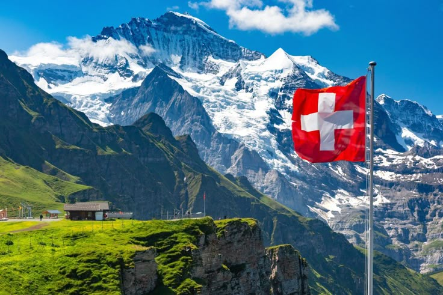

Viaja a Suiza
Descubre Suiza, un país donde la naturaleza y la cultura se fusionan en perfecta armonía. Desde los majestuosos Alpes hasta sus encantadores pueblos y vibrantes ciudades como Zúrich y Ginebra, Suiza ofrece paisajes de ensueño y una rica historia. Disfruta de su famosa gastronomía, con chocolates y quesos incomparables, y maravíllate con su eficiente sistema de transporte que te llevará a cada rincón del país.
¿Conoce tu siguiente sitio vacacional?
Algo importante que debes de saber
En Suiza, la puntualidad es un valor fundamental, por lo que llegar tarde sin previo aviso puede considerarse una falta de respeto. Al saludar, es común dar un apretón de manos firme y hacer contacto visual, mientras que entre amigos se acostumbra dar tres besos en la mejilla, aunque esto puede variar según la región. El respeto por la privacidad y el espacio personal es clave, por lo que se recomienda ablar en un tono moderado en lugares públicos y evitar preguntas demasiado personales. Además, Suiza es un país limpio y organizado, por lo que es importante no tirar basura en la calle y seguir las normas de reciclaje. En el transporte público, se espera que los pasajeros mantengan el silencio, especialmente en los vagones designados como “zonas tranquilas”. Finalmente, la cultura suiza valora la discreción y la cortesía, por lo que es recomendable evitar gestos exagerados o comportamientos demasiado efusivos en entornos formales.
Contacto
Si tienes alguna duda o deseas más información, contáctanos a través del siguiente correo:
Enviar correo